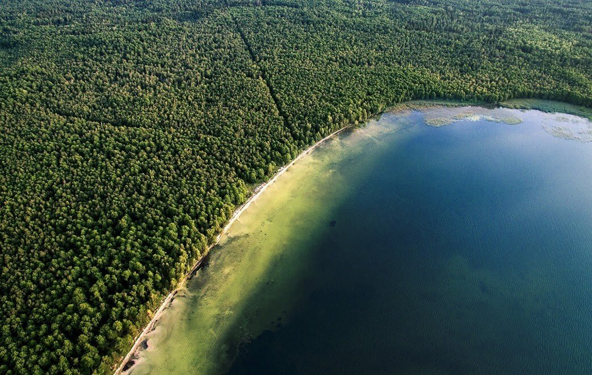

Рівненська область по праву може претендувати на визнання одного з найоригінальніших регіонів України. Рівненщина – глибоко історична земля, що повниться численними пам’ятками природи, архітектури, культури та унікальними об’єктами, аналогів яким нема у інших регіонах. Тут же є і приваблива етнографічна база для розвитку сільського туризму: майстри з ткацтва, лозоплетіння, різьби по дереву, народної вишивки. Збереглися унікальні зразки фольклору та народних звичаїв.
Відомі місця Рівненщини
Базальтові стовпи - діти вулкана
Це чудо природи знаходиться біля села Новий Берестовець (Костопільський район) та входить до Геологічний заказник. Це місце брало участь у всеукраїнському конкурсі «7 чудес природи України» і увійшло до фіналу! Базальт - це досить рідкісна порода вулканічного походження. В Поліссі теж є базальтові поклади, але вони, на відміну від рівненських залягають не стовпами, а лавовимипотоками.
Тут же вони мають форму чотирьох-або восьмигранних стовпів товщиною від 0,6 до 1,2 м і висотою від 3-х до 30 м. Іншими словами - це навіть не стовпи, а колони! Така форма базальту більше ніде в Україні не зустрічається і вчені досі ламають голову - що робить порода вулканічного походження на рівниною місцевості Костопільщини? З базальту виходять відмінні облицювальні плити, не дарма саме Український базальт використовували, щоб вимостити мостові Лондона, Парижа .
Біле озеро

Біле озеро, прикраса Рівненської області, отримало свою назву завдяки білому дну. Тут сама чиста і прозора вода! До того ж Біле озеро, незалежно від сезону, оповите легкої витонченої серпанком туману, тому сюди їдуть робити гарні знімки закохані і наречені. До озера їдуть не тільки за красою, але й за зміцненням здоров'я, так як вода тут має лікувальні властивості, а б'ють джерела роблять воду завжди приємно теплою.
Недалеко від Клевані знаходиться покинутий залізничний шлях, по якому раніше возили деревину в Оржевських деревообробний комбінат. Ще тоді, коли цим шляхом їздили потяги, дерева по обидва боки залізниці стали зростатися, утворивши неймовірної краси тунель довжиною в два кілометри. Потяги не дали деревам зростися як попало, тому з боку це виглядає, як геометрично ідеальна арка. Вона витончена і загадкова в будь-який час року, але все одно раджу відправиться туди або навесні, або зрілої восени!Цей тунель облюбували романтики і, звичайно ж, закохані. З часом з'явилася прикмета - проїхавши крізь нього, поцілувавшись і загадавши бажання, можете не сумніватися, навіть сама неймовірна мрія збудеться!
«Тунель любові» у Клевані
ВАРАШ
Герб Вараша
Прапор Вараша
Вараш — місто в Рівненській області України, центр Вараського району і Вараської міської громади.
Населення становить 42 350 осіб (2019).
Місто розташоване в північній течії
річки Стир, однойменний зупинний пункт залізниці —
за 7 км від залізничної станції Рафалівка на
лінії Ковель—Сарни, за 156 км від Рівного. Місто-супутник Рівненської атомної електростанції.
Раніше називалося на честь радянського розвідника, співробітника НКВС, Героя Радянського Союзу М. І. Кузнецова.
Засноване в 1973 році
на місці колишнього села Вараш, яке згадується у документах з 1577 року. Статус
міста з 1984 року. 19 травня 2016 року депутатами Верховної Ради України прийнято
постанову про перейменування окремих населених пунктів та районів, зокрема
Кузнецовська.
Вараш — одне з небагатьох міст світу, на
гербі якого зображена атомна електростанція.
Перша
згадка. Під владою Речі Посполитої.
Перше поселення на місці Вараша виникло ще
в кам'яну добу. Про це свідчать знайдені тут
кам'яні знаряддя праці — ножі, наконечники, сокири.
Перша письмова згадка
про Вараш датується 1577 роком. У цей час село Hwarąsz(Гваронш) належало
князю Михайлу
Чорторийському і адміністративно відносилося до Чорторийської
волості Луцького повіту Волинського Воєводства Малопольської провінції Речі Посполитої. Із села князь сплачував
податок з 11 димів (домогосподарств).
Провідне місце в соціально-економічному розвитку міста
належить Рівненській атомній електростанції, що входить як структурний
підрозділ до складу державного підприємства — Національної атомної
енергогенерувальної компанії «Енергоатом» (м. Київ). У місті працює молокозавод та
хлібзавод «Скиба» (до 2018 року — «Рум'янець»), який розширює виробництво.
У проєктах — відновлення роботи асфальтобетонного заводу та заводу
залізобетонних конструкцій, добудова пивзаводу.